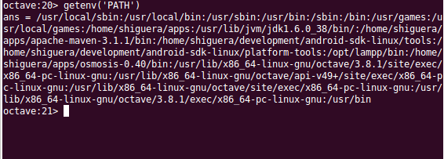

Utilidades¶
Utilización de paquetes adicionales¶
Octave-Forge [1] es el repositorio donde se centraliza el desarrollo colaborativo de paquetes de funcionalidades adicionales para Octave.
Los paquetes de Octave-Forge amplian la funcionalidades estándar de Octave, añadiendo utilidades y funciones específicas para distintos ambitos de aplicación. Todos los paquetes de Octave-Forge se pueden instalar mediante el mecanismo de instalación de paquetes incorporado en el propio Octave. Para instalar un paquete, desde la consola de Octave, teclear:
pkg install -forge package_name
donde package-name es el nombre del paquete a instalar. Octave descargará e instalará el paquete, quedando las funciones contenidas en el mismo disponibles para su utilización.
Hay multitud de paquetes con funcionalidades adicionales que se pueden incorporar a la instalación de Octave. La lista de paquetes disponibles se puede consultar en [2]. Algunos ejemplos de paquetes adicionales que podemos instalar:
- image: procesamiento de imágenes
- io: funciones de entrada-salida en distintos formatos: csv, xml, xls, json y otros.
- java: interface para utilizar funciones java
- mechanics: incluye, entre otras, funciones útilitarias para calculo de estructuras
- octproj: transformaciones entre proyecciones cartográficas
- splines: funciones para manipulación de splines
Podemos comprobar la lista de paquetes que tenemos instalados haciendo:
pkg list
Además de la lista de paquetes anterior, hay una lista adicional de paquetes no incluidos en el sistema de paquetes pkg, pero cuyo código fuente se puede consultar y descargar en [3].
[1] Octave-Forge: http://octave.sourceforge.net/index.html
[2] Octave-Forge: Lista de paquetes: http://octave.sourceforge.net/packages.php
[3] Paquetes adicionales: http://sourceforge.net/p/octave/_list/hg
Utilidades para interactuar con el Sistema Operativo¶
Podemos ejecutar comandos del sistema operativo mediante la función system(cmd, flag). El primer argumento será una cadena de caracteres con el comando a ejecutar. El segundo parámetro es opcional, y si está presente, la salida del comando se devolverá como una cadena de texto. Si este segundo parámetro no está presente la salida del comando se enviará a la salida estándar. El valor de este segundo parámetro es cualquiera, por ejemplo un ‘1’.
Podemos recuperar el valor de una variable del sistema mediante la función getenv(‘var_name’), por ejemplo, en Linux, para recuperar el path:
{kind=link}
Podemos conocer el directorio actual mediante pwd(), cambiar de directorio mediante cd <dir_name>, listar el contenido de un directorio mediante dir o ls y crear un nuevo directorio mediante mkdir <di_name>.
La función computer() nos informará del ordenador en el que se está ejecutando Octave.